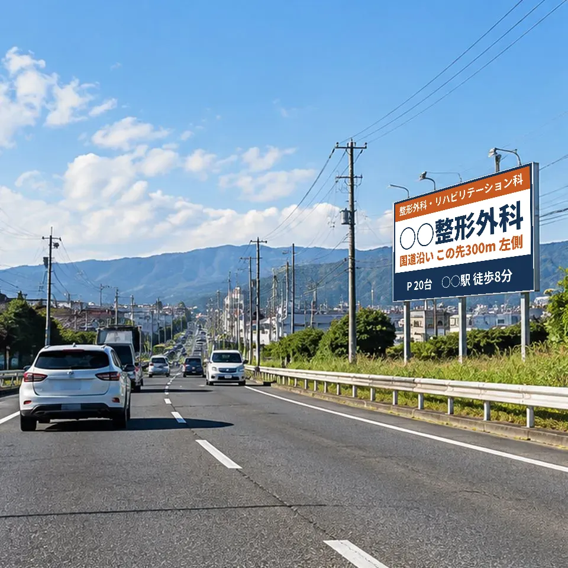

BRIDGE CYCLE株式会社 京滋ロードサイン・ネットワーク
○○整形外科 御中（見本）
幹線道路を通る方に、
医院を覚えてもらう。

設置イメージ（架空の医院・実在の候補地ではありません）0結論
どこに医院の前後の幹線道路に、4つの候補壁面・電柱・建物の共同看板・野立て看板。地図は第1章
いくらで野立て看板で月1.5万〜3万円が相場壁面と電柱は場所ごとの見積もり。候補ごとの金額は第1章
どう確かめるか看板とWEBをつなぎ、検索・経路・予約の数で測るできれば掲出の3か月前から数え始め、前後の変化で確かめる。第2章
1設置の候補と金額
この見本の医院は幹線道路に直接面しています。課題は「通り過ぎさせないこと」です。両方向から、医院の手前で目に入る位置に案内を置きます。
略図です。距離は目安です。交通量は、国の道路交通センサスで医院の前の区間に近い観測地点の値を調べて記入します。
A手前の建物の壁面
- 見る人
- 一方の方面から来る車（医院の手前）
- 大きさ
- 壁面の大きさ次第 個別に照会
- 月額
- 建物所有者との個別契約 個別に照会
B反対側の電柱広告
- 見る人
- 反対方面から来る車・駅から歩く人
- 大きさ
- 電柱に巻く・突き出す小型の看板
- 月額
- 電柱1本ごとの料金 個別に照会
C建物の共同案内看板
- 見る人
- 医院の前を通るすべての人
- 大きさ
- 建物の前の立て看板（ポール）
- 費用
- 製作費を入居医院で分担。月額は建物との取り決め 個別に照会
D野立て看板（1km圏）
- 見る人
- 幹線道路を通る車（医院の存在を覚えてもらう）
- 大きさ
- 横1.8m×縦2.7m 前後が多い
- 月額
- 1.5万〜3万円が相場、別に製作費 空きは個別に照会
02万4万6万円/月
金額のバーは月額の目安の幅です。斜線は、照会が済むまで金額を示せない候補です。
2看板とWEBをつないで、効果を測る
看板を見てすぐに来院する人は多くありません。多くの方は、看板で医院名を覚え、あとで検索や地図アプリで調べてから予約します。看板から来た人を1人ずつ特定することはできませんが、この流れの各段階の数が掲出の前後でどう変わったかを、いくつかの数を組み合わせて確かめられます。
1 見る看板医院名と「幹線道路沿い」を覚えてもらう指標：前を通る台数（交通量）
2 調べる検索・地図医院名で検索、地図で場所を確認指標：医院名を含む語句での表示回数、地図での閲覧数
3 決めるWEB予約・電話ホームページから予約、地図から電話・経路案内指標：WEB予約数、地図からの電話・経路案内の数
4 来る来院新患として来院指標：新患数（予約時の「きっかけ」欄で補う）
| 何を数えるか | どこで数えるか | 看板の効果の見方 |
|---|---|---|
| 医院名での表示回数・クリック数 | Google Search Console（ホームページの管理画面） | 掲出の前後で、医院名で探す人が増えたか（検索した人数そのものではない） |
| 地図での表示・電話・経路案内 | Googleビジネスプロフィールの実績画面 | 掲出の前後で、地図からの電話・経路案内が増えたか（他の宣伝の効果も含まれる） |
| WEB予約数 | 医院のWEB予約システム | 予約フォームの「来院のきっかけ」に「道路の看板」が入るか |
| 新患数 | レセコン・受付簿 | 掲出前（できれば3か月）と、掲出後3か月の比較 |
車を運転している方は、看板のQRコードを読めません。QRコードは、駅から歩く方が見る電柱や建物の看板（B・C）にだけ付け、看板ごとに別のページへつなぎます。読み取られた数で、その看板の効果がそのまま分かります。
3看板を出す前に、WEBで必ず整えること
看板で関心を持った方が検索したとき、情報が足りないと予約に進みません。看板の効果は、WEBの受け皿で決まります。
Googleマップの医院情報診療時間、休診日、駐車場、建物の外観写真、何階にあるか
医院名で検索したときの見え方ホームページが一番上に出るか。口コミへの返信
WEB予約の入口トップページからすぐ予約できるか。予約フォームに「来院のきっかけ」の欄
看板と同じ見た目看板の色と医院名の書体をホームページにそろえ、同じ医院だと分かるようにする
これらは看板の費用とは別に、当社から無料で助言します。ホームページも医療広告の規制の対象になるため、表現は医院でご確認ください。
4看板の文面
整形外科・リハビリテーション科
○○整形外科
幹線道路 この先300m 左側
P 20台 ○○駅 徒歩8分
載せる医院名、診療科名、場所の案内、駐車場、電話番号、診療日・時間
載せない「痛くない」「地域No.1」など効果や優位性をうたう表現、体験談
工夫運転中に読めるのは数語です。医院名と「この先◯m 左側」を最も大きくします
医療広告ガイドラインに沿った文面案です。掲出の前に医院でご確認ください。迷う表現は保健所への事前相談をお勧めします。
5進め方
- 今月WEBの受け皿を整える（第3章）。医院名での表示回数・地図の実績・WEB予約・新患の数を、この月から記録し始める（比べるための基準になる）
- 翌月候補A〜Dの空きと料金を確定し、1〜2面を選んで契約。製作・設置（一般に2〜4週間）
- 3か月目掲出開始。数の記録は医院で続けていただく
- 6か月目掲出3か月後の振り返り（当社と1回）。前後の数を比べ、効いた面は継続、効かない面は入れ替えか終了を判断
6費用と、元が取れる目安
初年度の費用（月額12か月＋製作費）
月あたりの費用（初年度平均）
元が取れる新患の数
金額は照会前の仮の値です。「新患1人がもたらす利益」は、通院回数と診療報酬から医院でお見積もりください。効果を保証するものではありません。
7当社の役割と費用
- このプランの作成、候補探し、WEBの助言、掲出3か月後の振り返り（1回）に、医院から費用はいただきません。Googleマップやホームページの運用代行は行わず、必要な場合は専門の会社をご紹介します。
- 看板の契約は、医院と看板会社とで直接結んでいただきます。当社は契約が成立した場合に看板会社から紹介手数料を受け取ります。製作・施工会社をご紹介した場合も、その会社から紹介料を受け取ることがあります。
- 費用はすべて、事前にお見積もりでお示しします。
開業・移転を予定している医院の方へ。場所に合わせたプランを無料でお作りします。
メール info@bridgecycleco.com ／ LINE @907kxssd